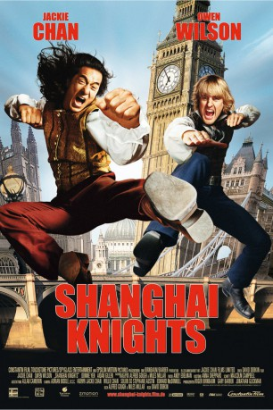

#461 Shanghai Knights
 
 IMDB-Wertung: 6.2 / 10
IMDB-Wertung: 6.2 / 10  Metascore: 58
Metascore: 58 
Auf der Suche nach dem Mörder von Wangs Vater, verschlägt es die ungleichen Freunde Chon Wang und Roy O’Bannon nach London. Auch Wangs Schwester Lin will den Mord an ihrem Vater rächen und folgt dem Verbrecher nach England. Bei ihren Nachforschungen stoßen die drei auf eine großangelegte Verschwörung rund um die königliche Familie. Da ihnen niemand Glauben schenken will, nehmen sie die Sache selbst in ihre schlagkräftigen Hände. Um die Staatsoberhäupter zu retten und den Mörder seines Vaters zur Strecke zu bringen, muss Wang erst einmal einigen Leuten kräftig in den steifen britischen Hintern treten. Allerdings hat er auch noch alle Hände voll damit zu tun, den liebeskranken Roy von seiner kleinen Schwester fernzuhalten.
Jahr: 2003
Dauer: 114 Minuten
FSK: 12
Land: USA Studio: Buena Vista PicturesTonspuren: DTS - ,
Untertitel: Deutsch,
Auflösung: 1080p (1920x816) Größe: 10444 MB
Genre: Action, Abenteuer, Komödie
Regisseur: David Dobkin
Drehbuch: Alfred Gough, Miles Millar, Alfred Gough, Miles Millar
Soundtrack: Randy Edelman
Darsteller:
 Jackie Chan als Chon Wang
Jackie Chan als Chon Wang Owen Wilson als Roy O'Bannon
Owen Wilson als Roy O'Bannon Aaron Taylor-Johnson als Charlie Chaplin
Aaron Taylor-Johnson als Charlie Chaplin Aidan Gillen als Rathbone
Aidan Gillen als Rathbone- Fann Wong als Chon Lin
 Donnie Yen als Wu Chow
Donnie Yen als Wu Chow Oliver Cotton als Jack the Ripper
Oliver Cotton als Jack the Ripper- Alison King als Prostitute
 Constantine Gregory als The Mayor
Constantine Gregory als The Mayor Anna-Louise Plowman als Debutante
Anna-Louise Plowman als Debutante Georgina Chapman als Debutante
Georgina Chapman als Debutante John Owens als Server
John Owens als Server Richard Bremmer als Master at Arms
Richard Bremmer als Master at Arms Kim Chan als Chon Wang's Father
Kim Chan als Chon Wang's Father Gemma Jones als Queen Victoria
Gemma Jones als Queen Victoria Eric Meyers als Front Desk Clerk
Eric Meyers als Front Desk Clerk Tom Wu als Lead Boxer Liu
Tom Wu als Lead Boxer Liu- Vincent Wang als Imperial Guard
- Barbara Nedeljakova als Debutante #3
- Rob Freeman als
- Bradley James Allan als Street Thug / Library Thug , uncredited
 Nigel Davenport als Old Man , uncredited
Nigel Davenport als Old Man , uncredited James Embree als Street Thug , uncredited
James Embree als Street Thug , uncredited- Kelly-Marie Kerr als Clara , uncredited
 Tom Fisher als Artie Doyle
Tom Fisher als Artie Doyle- Jonathan Harvey als Fagin #1
- Richard Haas als Street Preacher
- Daisy Beaumont als Cigarette Girl
- Stephen Fisher als Head Waiter
- Matt Hill als Deputy
- Terry Howson als Shotgun
- Ryan James als Waiter
- Barry Stanton als Lord Chancellor
- Matthew Storey als Fagin #2
- Charlie G. Hawkins als Newspaper Boy
- Gerard Whelan als Rathbone Guard
- Rene Hajek als Rathbone Guard #2
- Ho Ban Le als Palace Guard
- Van Hai Bui als Palace Guard
- Vladimír Hrbek als Old Man with Cane
- Jirí Mojzís als Old Couple, Man
- Marta Andresová als Old Couple, Woman
- David Listvan als Palace Guard with Rifle
- Petra Jezková als Toothless Flower Girl
- Eva Ruzicka als Debutante #4
- Hanka Scudlová als Cleopatra Model
- Hana Jouzová als Harpist
- Tom Klar als Quartet
- Jan Petrik als Quartet
- Milolas Cech als Quartet
Datei: X:\2-Dilogie(N-Z)\Shanghai Noon\Shanghai Knights (2003, FSK12, 1920x816).mkv seit 25.02.2015
Festplatte: HD Collection-2(A-Z)-3(A-M)
 Alle Filme aus Gruppe '2-Dilogie(N-Z)\Shanghai Noon'
Alle Filme aus Gruppe '2-Dilogie(N-Z)\Shanghai Noon'